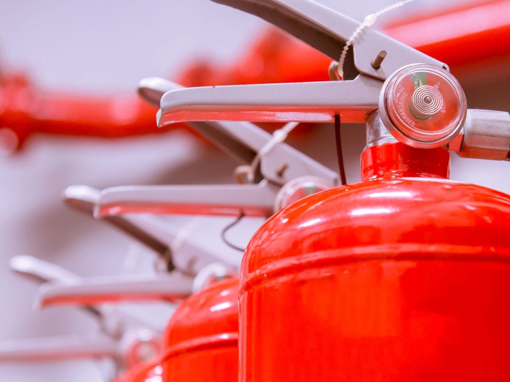
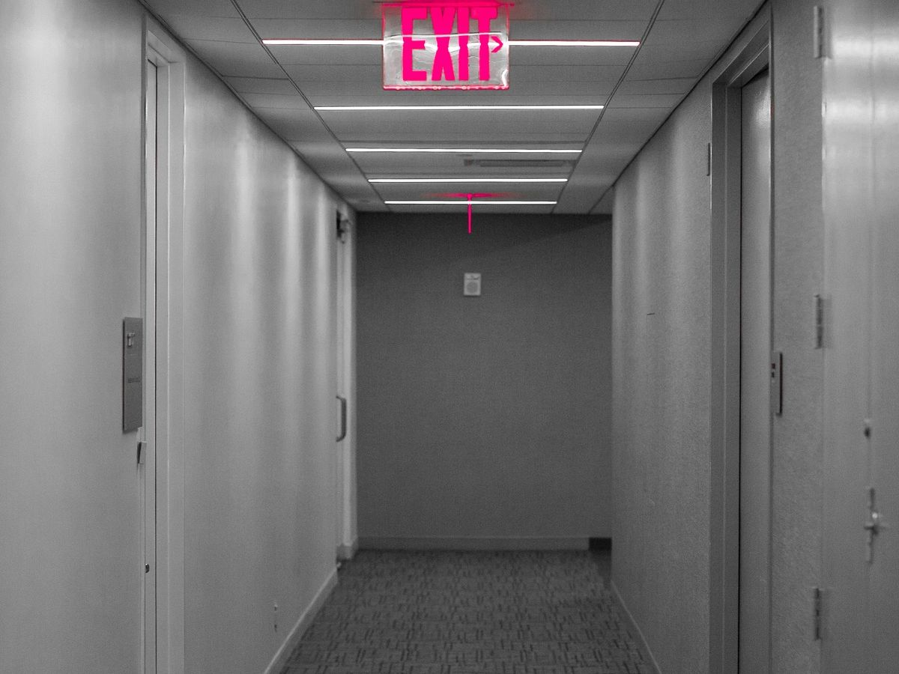
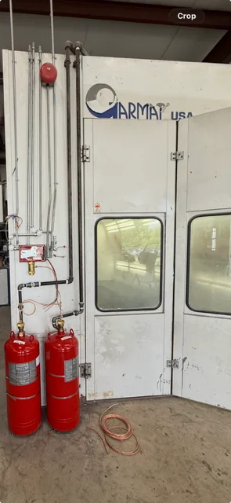
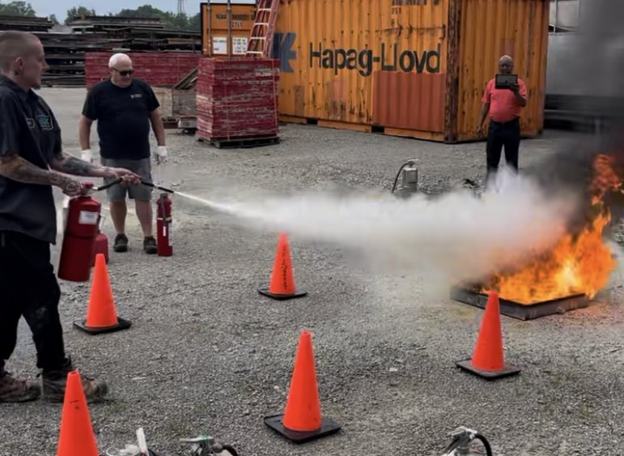
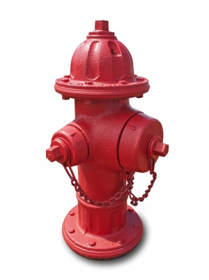

01
Fire extinguishers
Inspection, maintenance, recharge, repair, and replacement support for portable fire extinguishers.
InspectionMaintenanceRechargeRepairReplacement
Indianapolis life-safety service
Condon Fire & Safety is a locally owned and veteran-founded fire protection company based in Indianapolis, Indiana. Founded in 1992 by Vietnam veteran Albert "Doc" Condon, the company has grown over more than three decades to serve commercial, industrial, and residential clients across a service footprint spanning Central Indiana. They specialize strictly in complete code compliance and emergency readiness by handling the sales, routine inspection, testing, and installation of first-line safety systems
Based at 5324 English Ave · Serving Indianapolis commercial properties
Service coverage
We focus on the life-safety essentials that keep your commercial and Industrial property prepared.

01
Inspection, maintenance, recharge, repair, and replacement support for portable fire extinguishers.

02
Testing, repair, replacement, and ongoing support for emergency lights and exit equipment.
03
Inspection, maintenance, and service support for commercial fire suppression systems.

04
Fire suppression inspection, maintenance, and compliance support for industrial paint booth systems.

05
Hands-on fire extinguisher demonstration and training classes for commercial teams and workplace safety programs.

06
Routine inspection and flow testing of fire hydrants to ensure reliable water supply and code compliance for commercial properties.
Fire Safety Game
Walk through an office, a commercial kitchen and a paint shop. Find the fire hazards our technicians look for on every visit, then grab the right extinguisher and put the fire out.
Service support
Tell us what needs attention. We'll help you understand the next step for your property.
Kennycondon@condonfire.comTel: 317-787-0472For pricing and general inquiries
Monday–Friday · 8:00 a.m. – 4:00 p.m.
24 Hour Emergency Service
5324 English Ave, Indianapolis, IN 46219